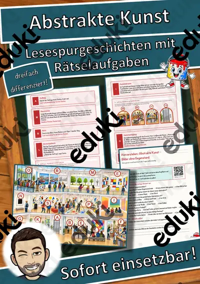
Abstrakte Kunst – Bilder ohne Gegenstand – Lesespurgeschichte mit Rätselaufgaben (Klasse 7)

Ampelsteuerung – Zustände und Automaten – Lesespurgeschichte mit Rätselaufgaben (Klasse 7)

Aufbruch in unbekannte Welten – Lesespurgeschichte mit Rätselaufgaben (Klasse 7)

Binärzahlen – die Sprache der Computer aus 0 und 1 – Lesespurgeschichte mit Rätselaufgaben (Klasse 7)

Bohren an der Ständerbohrmaschine – sicher und genau – Lesespurgeschichte mit Rätselaufgaben (Klasse 7)

Bonfire Night – ein Herbstfest in England – Lesespurgeschichte mit Rätselaufgaben (Klasse 7)
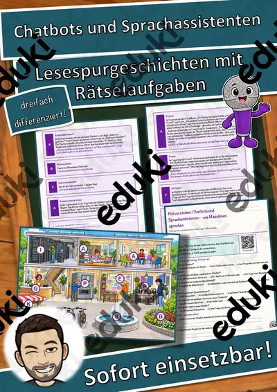
Chatbots und Sprachassistenten – wie Maschinen sprechen – Lesespurgeschichte mit Rätselaufgaben (Klasse 7)

Das Auge – Lesespurgeschichte mit Rätselaufgaben (Klasse 7)

Das Handwerk und die Zünfte – Lesespurgeschichte mit Rätselaufgaben (Klasse 7)
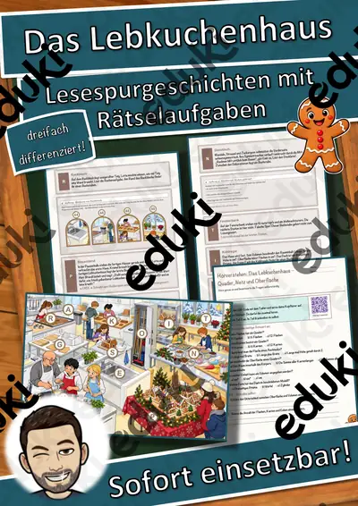
Das Lebkuchenhaus – Quader, Netz und Oberfläche – Lesespurgeschichte mit Rätselaufgaben (Klasse 7)
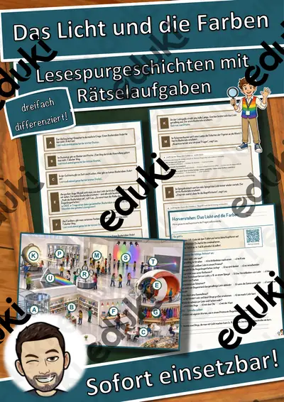
Das Licht und die Farben – Lesespurgeschichte mit Rätselaufgaben (Klasse 7)

Das Ohr – Lesespurgeschichte mit Rätselaufgaben (Klasse 7)

Das Porträt – Gesichter zeichnen und verstehen – Lesespurgeschichte mit Rätselaufgaben (Klasse 7)

Das Sportabzeichen – Leistungen messen und vergleichen – Lesespurgeschichte mit Rätselaufgaben (Klasse 7)
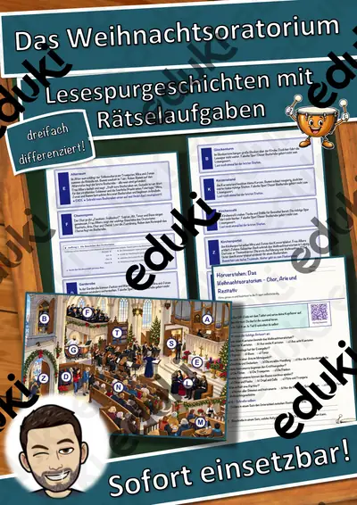
Das Weihnachtsoratorium – Chor, Arie und Rezitativ – Lesespurgeschichte mit Rätselaufgaben (Klasse 7)

Das antike Rom – die Republik – Lesespurgeschichte mit Rätselaufgaben (Klasse 7)

Das neue Smartphone – sicher einrichten – Lesespurgeschichte mit Rätselaufgaben (Klasse 7)

Der Bau der Kathedrale – Lesespurgeschichte mit Rätselaufgaben (Klasse 7)

Der Bauernhof – Lesespurgeschichte mit Rätselaufgaben (Klasse 7)

Der Blutkreislauf – Lesespurgeschichte mit Rätselaufgaben (Klasse 7)

Der Computer – Lesespurgeschichte mit Rätselaufgaben (Klasse 7)

Der Flohmarkt – Lesespurgeschichte mit Rätselaufgaben (Klasse 7)

Der Jahresrückblick – eine Radiosendung entsteht – Lesespurgeschichte mit Rätselaufgaben (Klasse 7)
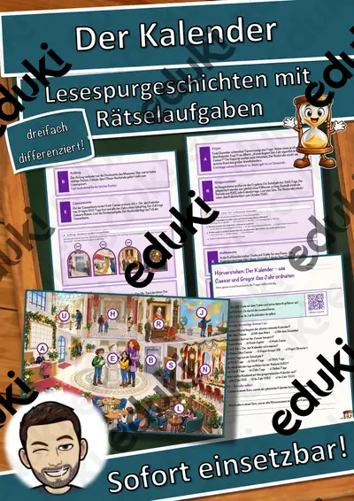
Der Kalender – wie Caesar und Gregor das Jahr ordneten – Lesespurgeschichte mit Rätselaufgaben (Klasse 7)

Der Magnetismus – Lesespurgeschichte mit Rätselaufgaben (Klasse 7)

Der Mischwald – Lesespurgeschichte mit Rätselaufgaben (Klasse 7)

Der Mond – Lesespurgeschichte mit Rätselaufgaben (Klasse 7)
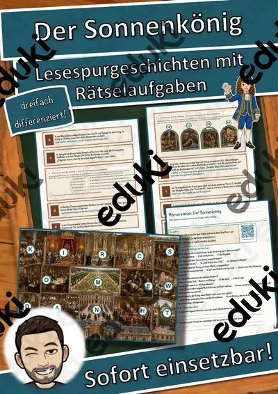
Der Sonnenkönig – Lesespurgeschichte mit Rätselaufgaben (Klasse 7)

Der Stromkreis – Lesespurgeschichte mit Rätselaufgaben (Klasse 7)

Der Vogel – Lesespurgeschichte mit Rätselaufgaben (Klasse 7)

Der Vogelzug – Lesespurgeschichte mit Rätselaufgaben (Klasse 7)

Der Vulkan – Lesespurgeschichte mit Rätselaufgaben (Klasse 7)

Der Wettlauf zum Südpol – eine Expedition ins ewige Eis – Lesespurgeschichte mit Rätselaufgaben (Klasse 7)

Der Winterschlaf – Lesespurgeschichte mit Rätselaufgaben (Klasse 7)

Der Wochenmarkt – Lesespurgeschichte mit Rätselaufgaben (Klasse 7)

Der tropische Regenwald – Lesespurgeschichte mit Rätselaufgaben (Klasse 7)

Die Atmung – Lesespurgeschichte mit Rätselaufgaben (Klasse 7)

Die Band – vom Proberaum auf die Bühne – Lesespurgeschichte mit Rätselaufgaben (Klasse 7)

Die Bibliothek – Lesespurgeschichte mit Rätselaufgaben (Klasse 7)

Die Fugger – Kaufleute und Bankiers – Lesespurgeschichte mit Rätselaufgaben (Klasse 7)

Die Honigbiene – Lesespurgeschichte mit Rätselaufgaben (Klasse 7)
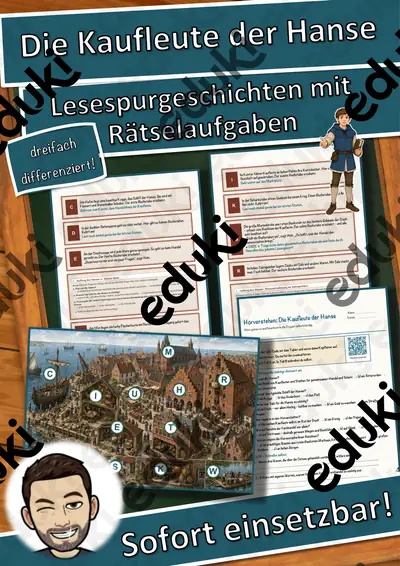
Die Kaufleute der Hanse – Lesespurgeschichte mit Rätselaufgaben (Klasse 7)

Die Klimagürtel der Erde – Lesespurgeschichte mit Rätselaufgaben (Klasse 7)

Die Landwirtschaft – Lesespurgeschichte mit Rätselaufgaben (Klasse 7)

Die Muskeln – Lesespurgeschichte mit Rätselaufgaben (Klasse 7)

Die Nahrungskette – Lesespurgeschichte mit Rätselaufgaben (Klasse 7)

Die Oper – Musik, die Geschichten erzählt – Lesespurgeschichte mit Rätselaufgaben (Klasse 7)

Die Perspektive – Lesespurgeschichte mit Rätselaufgaben (Klasse 7)

Die Physik-Werkstatt – Lesespurgeschichte mit Rätselaufgaben (Klasse 7)

Die Reformation – Lesespurgeschichte mit Rätselaufgaben (Klasse 7)

Die Schlange – Lesespurgeschichte mit Rätselaufgaben (Klasse 7)

Die Schulküche – Lesespurgeschichte mit Rätselaufgaben (Klasse 7)

Die Verdauung – Lesespurgeschichte mit Rätselaufgaben (Klasse 7)

Die Weinlese – Lesespurgeschichte mit Rätselaufgaben (Klasse 7)

Die Wetterstation – Lesespurgeschichte mit Rätselaufgaben (Klasse 7)

Die Wintersonnenwende – warum der Dezember so dunkel ist – Lesespurgeschichte mit Rätselaufgaben (Klasse 7)

Die Zähne – Lesespurgeschichte mit Rätselaufgaben (Klasse 7)

Druckgrafik – Holzschnitt und Linoldruck – Lesespurgeschichte mit Rätselaufgaben (Klasse 7)
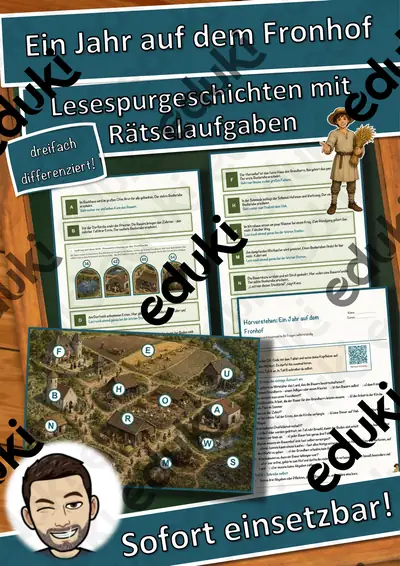
Ein Jahr auf dem Fronhof – Lesespurgeschichte mit Rätselaufgaben (Klasse 7)

Ein Winter im Dorf des Mittelalters – Bauern und Grundherr – Lesespurgeschichte mit Rätselaufgaben (Klasse 7)

Ein eigenes Spiel programmieren – Figuren, Regeln, Punkte – Lesespurgeschichte mit Rätselaufgaben (Klasse 7)
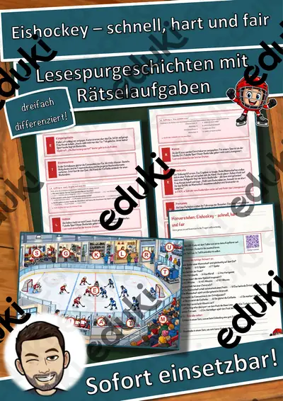
Eishockey – schnell, hart und fair – Lesespurgeschichte mit Rätselaufgaben (Klasse 7)

Erste Hilfe beim Sport – richtig handeln bei Sportverletzungen – Lesespurgeschichte mit Rätselaufgaben (Klasse 7)

Erwachsen werden – Übergangsrituale in den Religionen – Lesespurgeschichte mit Rätselaufgaben (Klasse 7)
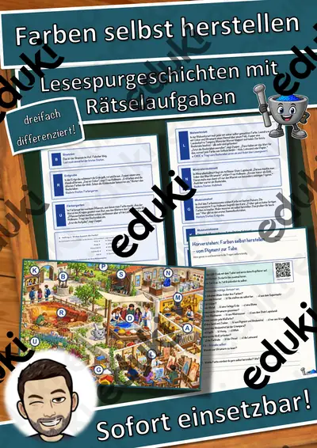
Farben selbst herstellen – vom Pigment zur Tube – Lesespurgeschichte mit Rätselaufgaben (Klasse 7)
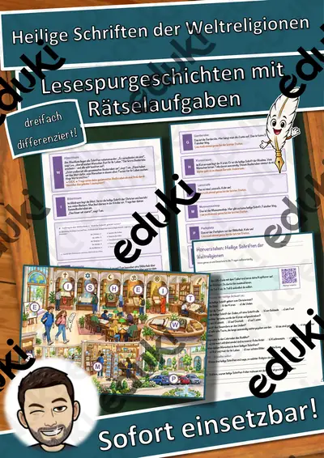
Heilige Schriften der Weltreligionen – Lesespurgeschichte mit Rätselaufgaben (Klasse 7)
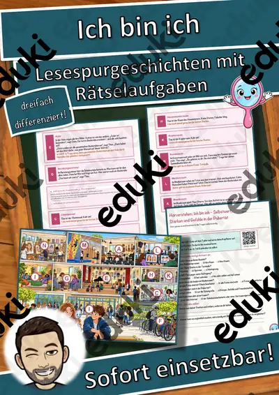
Ich bin ich – Selbstwert, Stärken und Gefühle in der Pubertät – Lesespurgeschichte mit Rätselaufgaben (Klasse 7)
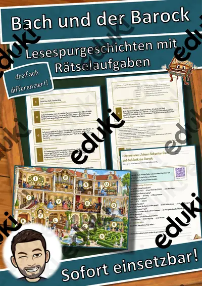
Johann Sebastian Bach und die Musik des Barock – Lesespurgeschichte mit Rätselaufgaben (Klasse 7)

Johann Strauss und der Walzer – Musik zum Tanzen – Lesespurgeschichte mit Rätselaufgaben (Klasse 7)

Kaiser gegen Papst – Lesespurgeschichte mit Rätselaufgaben (Klasse 7)
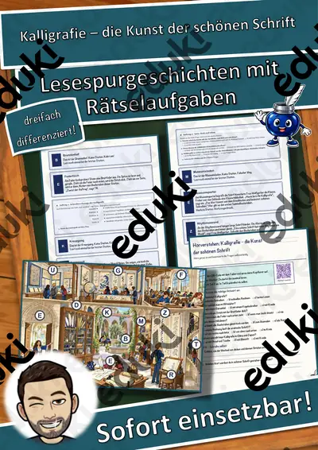
Kalligrafie – die Kunst der schönen Schrift – Lesespurgeschichte mit Rätselaufgaben (Klasse 7)

Kalte Küche fürs Klassenbuffet – Salate, Dips und Brotaufstriche – Lesespurgeschichte mit Rätselaufgaben (Klasse 7)

Klettern sichern – Knoten, Seil und Partnercheck – Lesespurgeschichte mit Rätselaufgaben (Klasse 7)

Kochen, Dünsten, Braten, Backen – die Garmethoden – Lesespurgeschichte mit Rätselaufgaben (Klasse 7)

Kunst der Renaissance – in der Werkstatt eines Meisters – Lesespurgeschichte mit Rätselaufgaben (Klasse 7)

Lantern Night Adventure – Lesespurgeschichte mit Rätselaufgaben auf Englisch (Klasse 7)
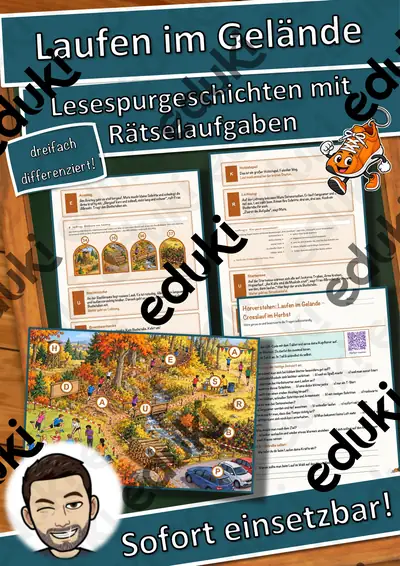
Laufen im Gelände – Crosslauf im Herbst – Lesespurgeschichte mit Rätselaufgaben (Klasse 7)

Mannschaftssportarten im Vergleich – Regeln, Felder, Spielerzahl – Lesespurgeschichte mit Rätselaufgaben (Klasse 7)

Materialpaket Lesespurgeschichten Biologie Klasse 7 – Der Mensch und seine Gesundheit: 10 Lesespuren mit Rätselaufgaben, dreifach differenziert

Materialpaket Lesespurgeschichten Biologie Klasse 7 – Tiere und Lebensräume: 7 Lesespuren mit Rätselaufgaben, dreifach differenziert
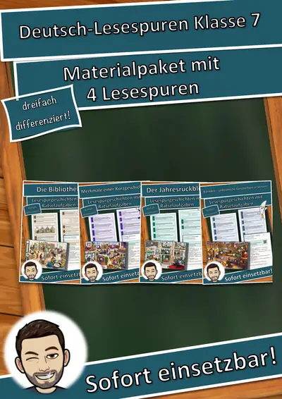
Materialpaket Lesespurgeschichten Deutsch Klasse 7: 4 Lesespuren mit Rätselaufgaben, dreifach differenziert

Materialpaket Lesespurgeschichten Erdkunde Klasse 7: 7 Lesespuren mit Rätselaufgaben, dreifach differenziert
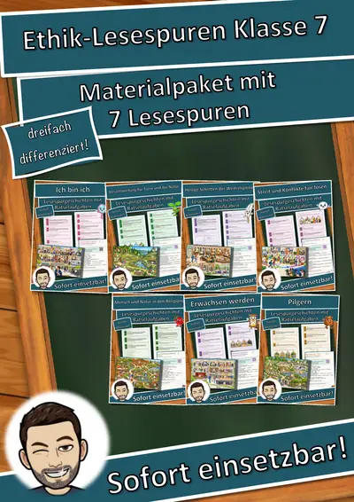
Materialpaket Lesespurgeschichten Ethik Klasse 7: 7 Lesespuren mit Rätselaufgaben, dreifach differenziert

Materialpaket Lesespurgeschichten Geschichte Klasse 7: 12 Lesespuren mit Rätselaufgaben, dreifach differenziert

Materialpaket Lesespurgeschichten Hauswirtschaft Klasse 7: 3 Lesespuren mit Rätselaufgaben, dreifach differenziert
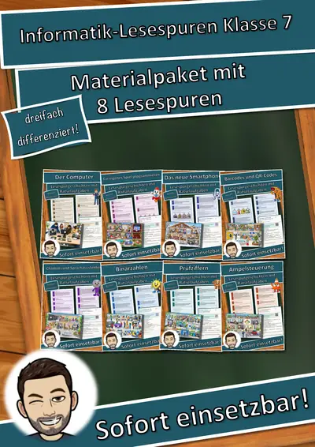
Materialpaket Lesespurgeschichten Informatik Klasse 7: 8 Lesespuren mit Rätselaufgaben, dreifach differenziert

Materialpaket Lesespurgeschichten Kunst Klasse 7: 6 Lesespuren mit Rätselaufgaben, dreifach differenziert

Materialpaket Lesespurgeschichten Musik Klasse 7: 8 Lesespuren mit Rätselaufgaben, dreifach differenziert
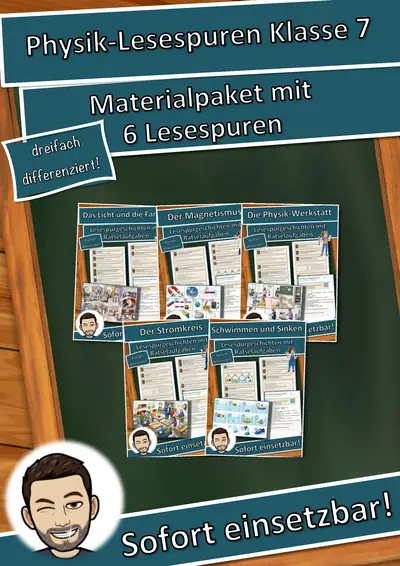
Materialpaket Lesespurgeschichten Physik Klasse 7: 6 Lesespuren mit Rätselaufgaben, dreifach differenziert

Materialpaket Lesespurgeschichten Sport Klasse 7: 7 Lesespuren mit Rätselaufgaben, dreifach differenziert

Materialpaket Lesespurgeschichten Technik Klasse 7: 3 Lesespuren mit Rätselaufgaben, dreifach differenziert

Materialpaket Winter und Advent für die 7. Klasse: 10 Lesespurgeschichten mit Rätselaufgaben fächerübergreifend (Weihnachtsoratorium, Südpol, Eishockey & mehr)

Mensch und Natur in den Religionen – Lesespurgeschichte mit Rätselaufgaben (Klasse 7)

Merkmale einer Kurzgeschichte – Lesespurgeschichte mit Rätselaufgaben (Klasse 7)

Metall formen – anreißen, sägen, feilen, biegen – Lesespurgeschichte mit Rätselaufgaben (Klasse 7)

Musik der Renaissance – Notendruck, Madrigal und Hoftanz – Lesespurgeschichte mit Rätselaufgaben (Klasse 7)
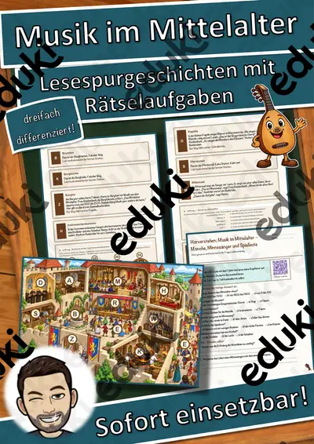
Musik im Mittelalter – Mönche, Minnesänger und Spielleute – Lesespurgeschichte mit Rätselaufgaben (Klasse 7)

Olympia in der Antike – Lesespurgeschichte mit Rätselaufgaben (Klasse 7)

Organspende – eine Entscheidung fürs Leben – Lesespurgeschichte mit Rätselaufgaben (Klasse 7)
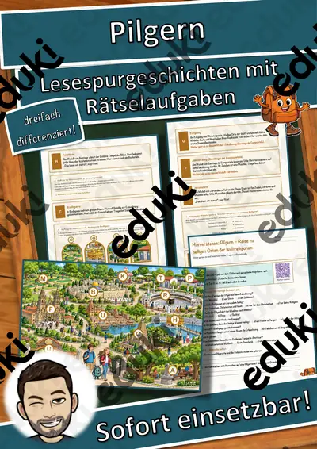
Pilgern – Reise zu heiligen Orten der Weltreligionen – Lesespurgeschichte mit Rätselaufgaben (Klasse 7)

Prüfziffern – wie Computer Tippfehler erkennen – Lesespurgeschichte mit Rätselaufgaben (Klasse 7)

Rauchen und Vapes – warum Nikotin abhängig macht – Lesespurgeschichte mit Rätselaufgaben (Klasse 7)

Regional oder importiert – Obst und Gemüse im Winter – Lesespurgeschichte mit Rätselaufgaben (Klasse 7)

Schwimmen und Sinken – Lesespurgeschichte mit Rätselaufgaben (Klasse 7)

Streit und Konflikte fair lösen – Lesespurgeschichte mit Rätselaufgaben (Klasse 7)
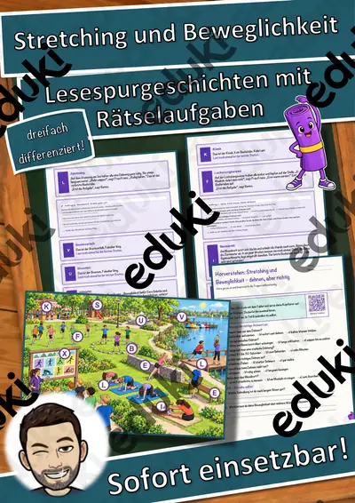
Stretching und Beweglichkeit – dehnen, aber richtig – Lesespurgeschichte mit Rätselaufgaben (Klasse 7)

Verantwortung für Tiere und die Natur – Lesespurgeschichte mit Rätselaufgaben (Klasse 7)
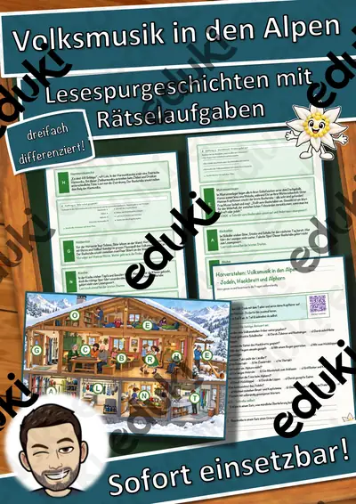
Volksmusik in den Alpen – Jodeln, Hackbrett und Alphorn – Lesespurgeschichte mit Rätselaufgaben (Klasse 7)

Warum Eis schwimmt – die Anomalie des Wassers – Lesespurgeschichte mit Rätselaufgaben (Klasse 7)
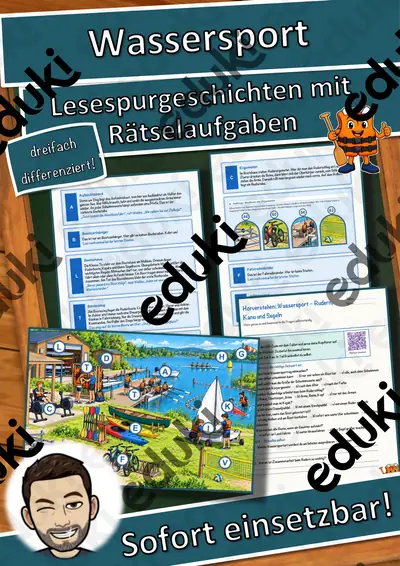
Wassersport – Rudern, Kanu und Segeln – Lesespurgeschichte mit Rätselaufgaben (Klasse 7)

Weltwassertag – das versteckte Wasser in Alltagsdingen – Lesespurgeschichte mit Rätselaufgaben (Klasse 7)

Wenn’s ernst wird – Katastrophenschutz in Deutschland – Lesespurgeschichte mit Rätselaufgaben (Klasse 7)

Wichern und der Adventskranz – Hilfe für Kinder in Not – Lesespurgeschichte mit Rätselaufgaben (Klasse 7)
Lesespurgeschichten in der 7. Klasse
Ab der siebten Klasse sind die Themen fachlich verankert und die Maskottchen bewusst jugendlich gehalten. Die Aufgaben verlangen Begründen und Rechnen, nicht nur Wiedererkennen.
Jede Geschichte liegt in drei Niveaustufen vor, die sich in Textlänge, Satzbau und Aufgabenanspruch unterscheiden. Weg, Stationen und Lösungswort bleiben gleich, sodass alle Fassungen gleichzeitig in einer Klasse laufen können.
Themen auf dieser Seite
Beispiele aus dieser Sammlung: Streit und Konflikte fair lösen · Materialpaket Lesespurgeschichten Sport Klasse 7: 7 Lesespuren mit Rätselaufgaben, dreifach differenziert · Ampelsteuerung · Der Vogel · Druckgrafik · Wassersport · Volksmusik in den Alpen · Musik der Renaissance.